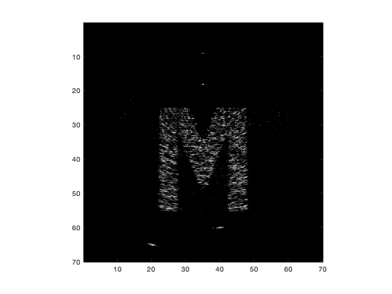
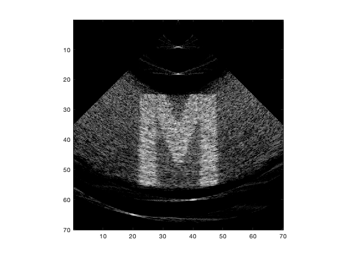
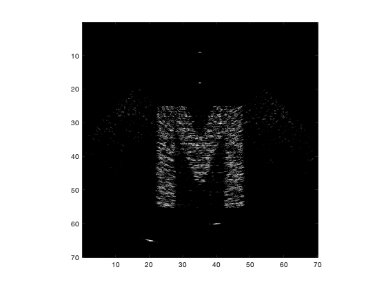
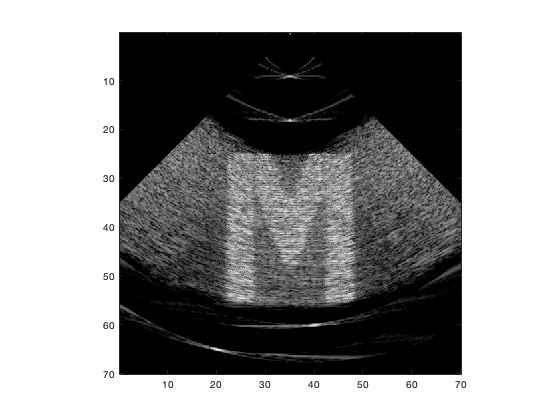
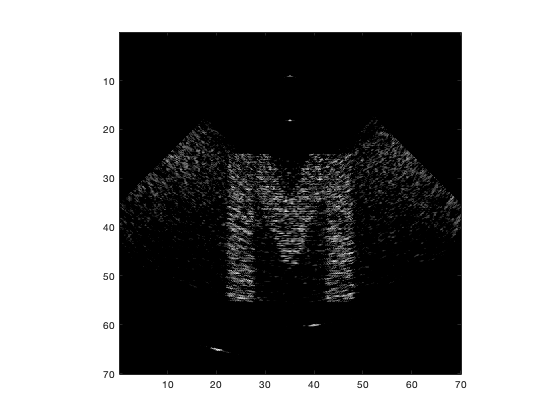
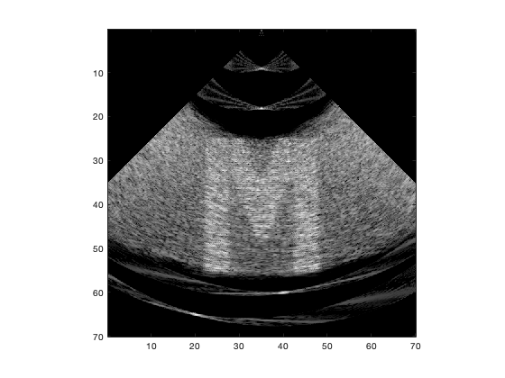

x = linspace(-35,35,512);
z = linspace(0,70,512);
[XI,ZI] = meshgrid(x,z);
[theta_i,r_i]=meshgrid(sin_theta,r);
r_ii = sqrt(XI.^2+ZI.^2);
theta_ii = XI./r_ii;
im = interp2(theta_i, r_i, abs(rsdata), theta_ii, r_ii, 'bilinear');
tt = find(isnan(im));
im(tt) = zeros(size(tt));
im_i = interp2(theta_i, r_i, abs(rsdata_i), theta_ii, r_ii, 'bilinear');
tt_i = find(isnan(im_i));
im(tt_i) = zeros(size(tt_i));
im_j = interp2(theta_i, r_i, abs(rsdata_j), theta_ii, r_ii, 'bilinear');
tt_j = find(isnan(im_j));
im(tt_j) = zeros(size(tt_j));
im_k = interp2(theta_i, r_i, abs(rsdata_i), theta_ii, r_ii, 'bilinear');
tt_k = find(isnan(im_k));
im(tt_k) = zeros(size(tt_k));
figure(10); showimage3(im, 1, 20,70/512,70/512); axis('image')
figure(11); showimage3(im, 1, 40,70/512,70/512); axis('image')
figure(12); showimage3(im_i, 1, 20,70/512,70/512); axis('image')
figure(13); showimage3(im_i, 1, 40,70/512,70/512); axis('image')
figure(14); showimage3(im_j, 1, 20,70/512,70/512); axis('image')
figure(15); showimage3(im_j, 1, 40,70/512,70/512); axis('image')
figure(16); showimage3(im_k, 1, 20,70/512,70/512); axis('image')
figure(17); showimage3(im_k, 1, 40,70/512,70/512); axis('image')
     